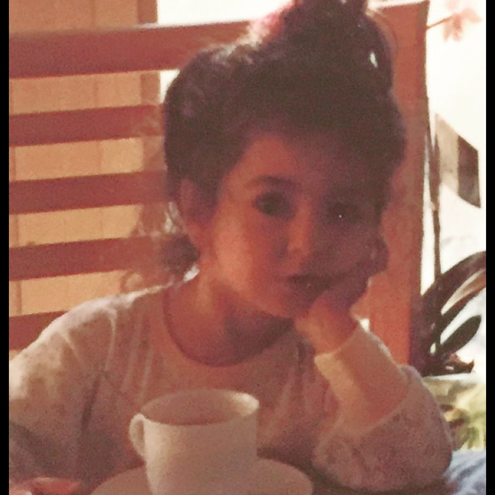
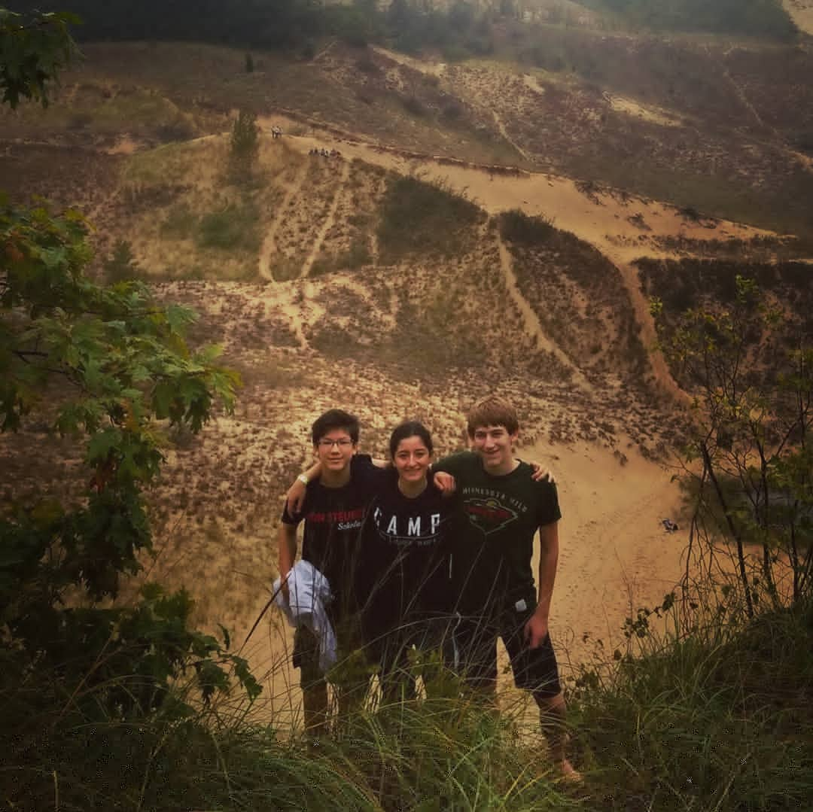
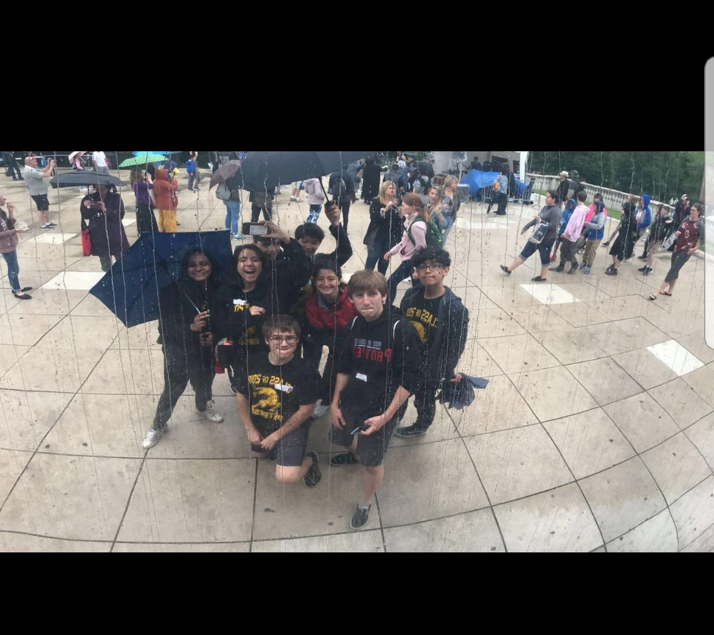

I live with my mom and dad as well as my older sister. I am the youngest child and my sister is 10 years older than I am.
Mom-46yrs old
Dad-51yrs old
Mihaela/Sis-25yrs old
Both my father and mother were raised and lived in Romania up to the year of 2001 when they moved to the United States. My father is from the northeastern region of Romania called Baia Mare and my mother is from Satu Mare. My sister was also born and raised in Romania while I am the first one to be born in the United States. When they had moved here they lived in New York for a couple of months. Then, they moved out to Chicago and we have lived here since. I was born and raised in Chicago. I have been playing soccer since I was 7. My family and I enjoy travelling a lot especially road trips because we enjoy the scenic views and making memories together. My favorite trip so far was to California which took a whooping 3-4 days because we stopped in a lot of different states to visit amazing places. I'm also very happy that I am attending my #1 highschool choice. (Lane Tech)